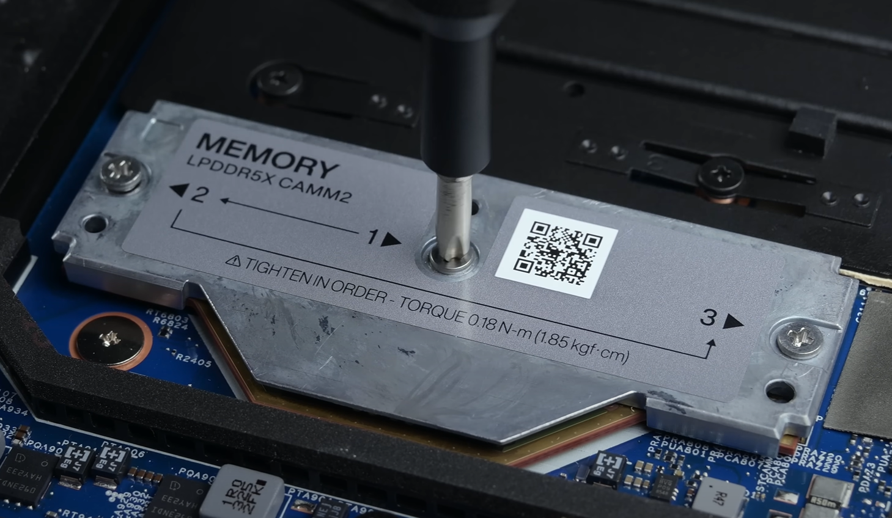
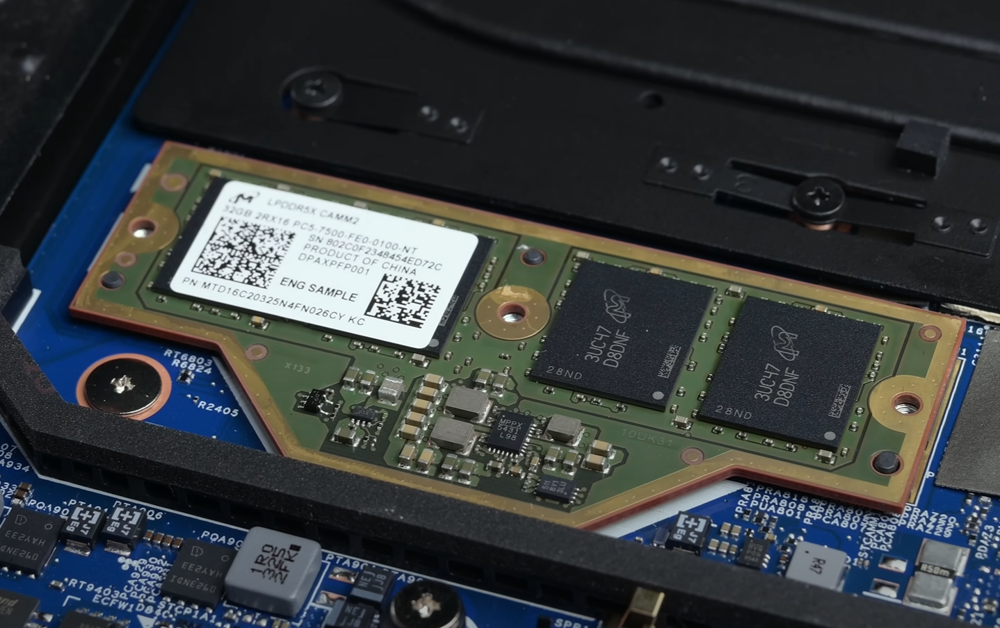
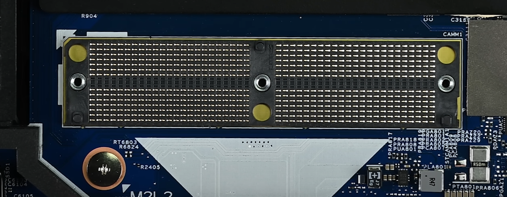
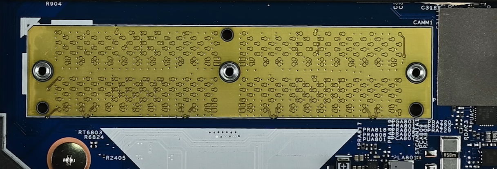

Easlie replace LPCAMM2 ram
Step 1
First Remove All 3 screws

step 2
Remove heat sink(yes Ram has its heat sink)

step 3
Remove the old ram 
You will see the new RAM module connector which aligns the RAM module to the motherboard  this is the exposed copper of your motherboard
last step
put new ram and heat sink back on, tight the screws and check your system is booting properly and ram is showing or not
Done
blog by Manav Rupani, Thanks for reading